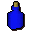
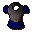
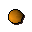
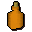
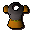

Goblin Diplomacy
Scripts in
scripts/quests/quest_gobdip/NPCs involved
Items involved

Blue dye
Blue goblin mail
Orange
Orange dye
Orange goblin mailInvolvement is derived from identifiers referenced by the quest scripts.